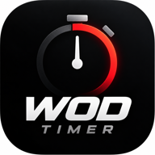

WOD TIMER3 · 2 · 1 · GO
READY TO WORK
Chelsea
30:00
ROUND0 / 30
NEXT ROUND01:00
TODAY'S WORKOUT
화면을 켜둔 상태에서 사용해 줘. 화면 잠금이나 다른 앱 전환 중에는 소리·진동이 보장되지 않아.
운동 설정
운동 종목
알림 설정
프리셋
운동 달력
운동 기록
기록 백업
기록은 이 기기의 브라우저에 저장돼. 기기 변경 전에는 백업 파일을 내려받아 줘.

화면을 켜둔 상태에서 사용해 줘. 화면 잠금이나 다른 앱 전환 중에는 소리·진동이 보장되지 않아.
기록은 이 기기의 브라우저에 저장돼. 기기 변경 전에는 백업 파일을 내려받아 줘.